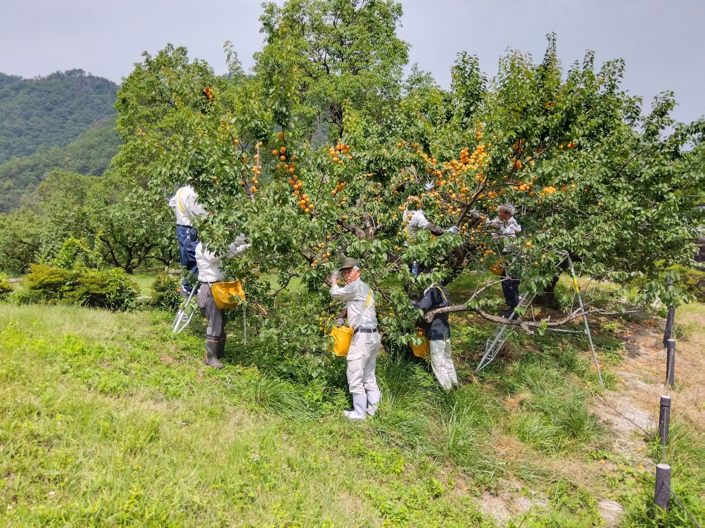
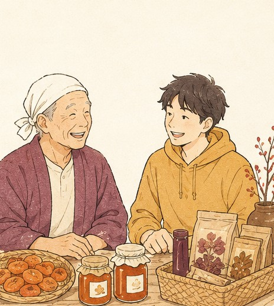
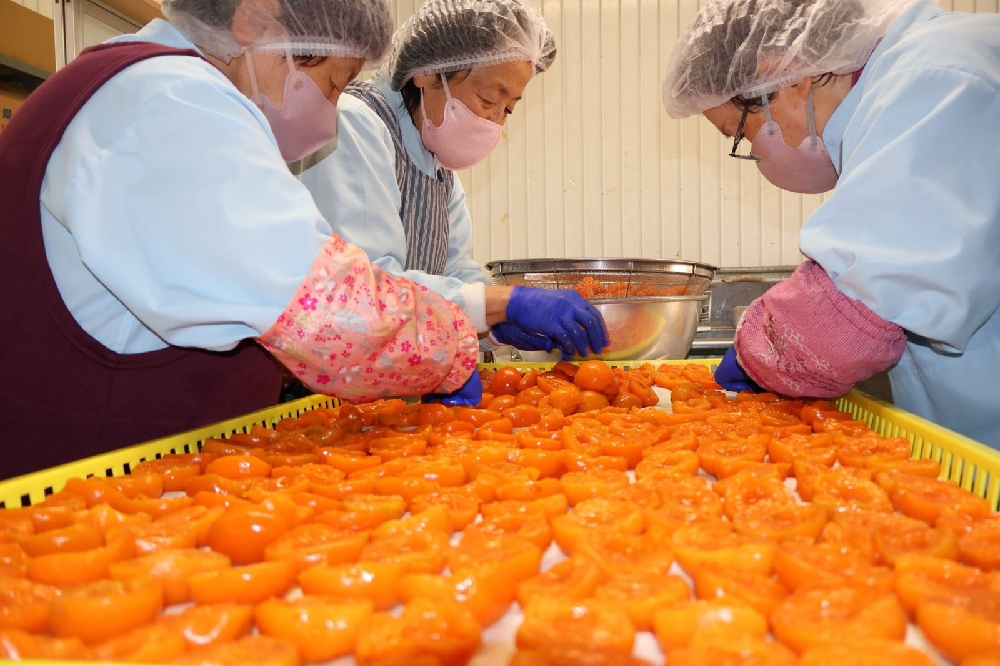
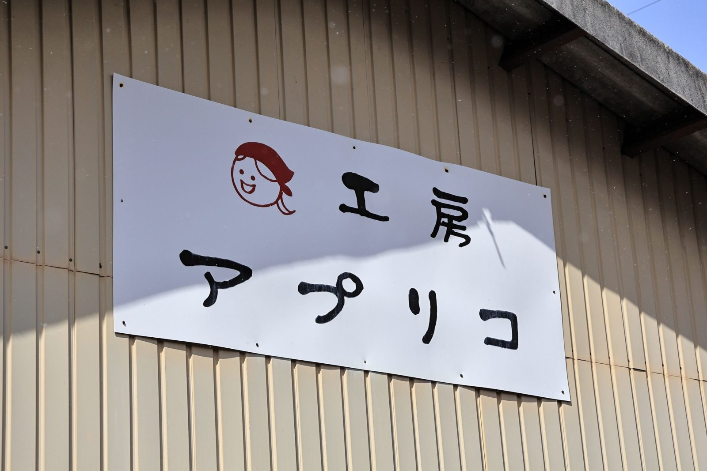

Harvest ・ あんずの収穫
あんずを、つくり手が摘む
千曲市・森地区の畑で実るあんず。収穫はつくり手の仕事で、私たちはその現場を見せてもらいます。
Cases 取扱事例
コレ買い！が都市へ届けている、地域の逸品です。私たちが産地に足を運び、つくり手の話を聞いたうえでお預かりしている事例を紹介します。掲載しているのは支援先の一つひとつで、サイト全体はコレ買い！の活動です。
Case 01 工房アプリコ
いま私たちが扱っている取扱事例の一つが、長野県千曲市のつくり手・工房アプリコのあんず加工品です。あんずの里・千曲で生まれた逸品を、都市の人へつなぎます。

カタログだけで決めません。畑や工房に行き、収穫・加工の現場を自分の目で見てから扱うかを判断します。
誰が・どんな想いで・どう作っているのか。背景まで聞いたうえで、都市の人へどう伝えるかを一緒に考えます。
収穫も加工もつくり手の仕事です。私たちが作っているわけではありません。コレ買い！は、できあがった逸品を都市へつなぐ役です。
都市のイベントや発信を通じて手に取ってもらい、現場で得た反応をつくり手へ持ち帰ります。
Field 現場の様子
収穫から加工まで、すべてつくり手の手仕事です。私たちが現場で見てきた、工房アプリコの様子を紹介します。

Harvest ・ あんずの収穫
千曲市・森地区の畑で実るあんず。収穫はつくり手の仕事で、私たちはその現場を見せてもらいます。

Processing ・ 工房での加工
摘んだあんずを工房で加工品に仕上げます。この工程もつくり手が担い、コレ買い！は関与しません。

Maker ・ 工房アプリコ
あんずの里・千曲で逸品を生むつくり手。私たちが現地を訪ね、お預かりしている取扱事例です。
Next 次の逸品を募集
取扱事例は、これから一つずつ増えていきます。都市へ届けたい逸品をお持ちの生産者・自治体の方を、募集しています。
「いいものなのに知られていない」逸品があれば、まず話を聞かせてください。現地に足を運ぶところから始めます。
取扱の可否を決める前の、ゆるやかな相談で構いません。お問い合わせ窓口からお気軽にどうぞ。